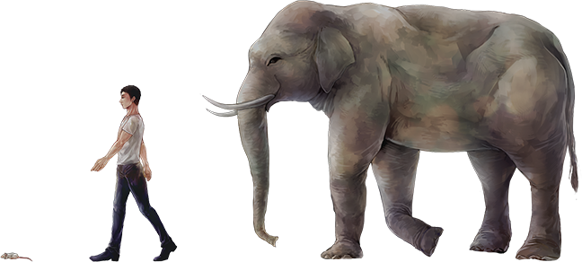

ABOUT
“スモールライト”の発明者が、人類の行く末を記録した物語。
映画『Godbook』（2015）で“福岡インディペンデント映画祭”を初めとする
数々の映画祭で受賞を果たし、
“LA EigaFest”など海外の映画祭にもノミネートされ、
国際的に評価を得ている二羽監督の最新作。
今作は、日本が苦手とする“ハードSF”に自主制作で挑戦するべく、
旺盛な創造力を駆使した世界観に加え、スタイリッシュな映像によって描き出す、
全編7話から構成される短編WEBシリーズ。
スモールライトとは
日本人なら誰もが知っている『ドラえもん』の“ひみつ道具”の一つ。
スイッチを押すと、どんな物体でも小さくすることの出来る光を出す。
理論的には電子レンジの原理に類似している。
電波の最小波長域であるマイクロ波を照射すると、熱膨張により物体は大きくなるが、
電波の最大波長域である“メイクロ派”を照射すると、“冷収縮”により物体は小さくなる。
この技術を応用することで生まれた世紀の大発明。
体感時間とは

ベストセラー書籍『ゾウの時間ネズミの時間』では、
生物にはそれぞれの体のサイズに応じて異なる時間の単位があるとされている。
ヒトはリンゴが木から地面に落ちるまでの時間を基準に絶対的な単位としているが、
緊張して心臓の鼓動が速いとき、時間があっという間に過ぎたように感じ、
単調で刺激の少ない環境では、時間の流れが遅いと感じることがある。
生物には生まれついての本能的な、すなわち体感的な時間が存在している。